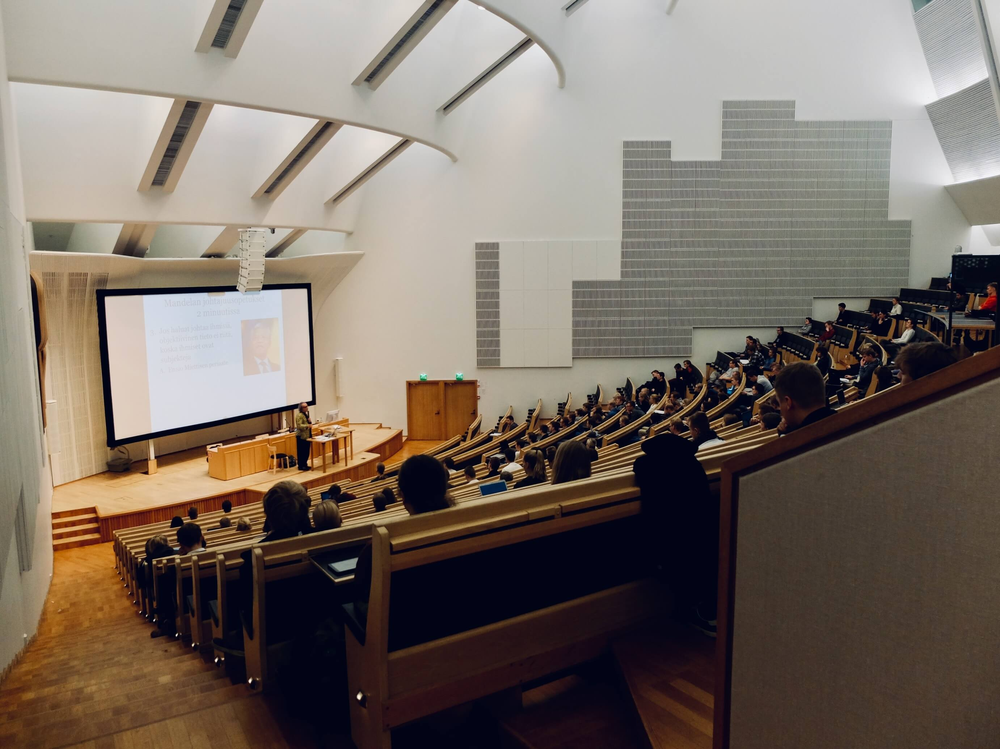
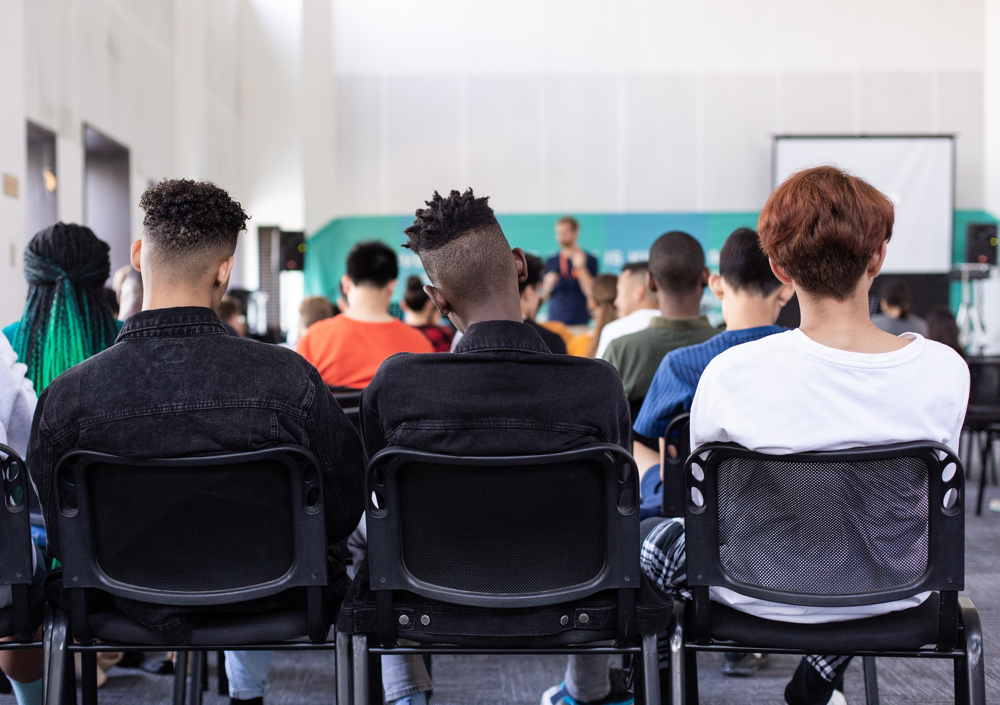

UntrefSchool
QUIENES SOMOS
En el corazón de nuestra institución late la pasión por la enseñanza y el crecimiento personal. Nos enorgullecemos de ser una escuela primaria y secundaria que va más allá de los conocimientos académicos convencionales.Nuestro propósito es acompañar a cada estudiante en su viaje educativo, fomentando su curiosidad y creatividad para que se conviertan en individuos autónomos, seguros y comprometidos con la sociedad.A través de un equipo de docentes apasionados y una infraestructura moderna, promovemos una formación integral que abarca desde el desarrollo intelectual hasta habilidades prácticas que los prepararán para un futuro exitoso en cualquier ámbito que elijan.
¿POR QUE ELEGIRNOS?
Brindamos la oportunidad única de acompañar el crecimiento de su hijo desde el comienzo hasta el final de su formación escolar, abarcando toda la etapa primaria y secundaria bajo el techo de nuestra prestigiosa institución. Permitir que su hijo transite su trayectoria educativa completa en una escuela de excelencia como la nuestra, es un privilegio altamente valorado por padres comprometidos con el futuro académico y personal de sus hijos, como usted.
PROPUESTA EDUCATIVA
Primaria
En nuestra institución, adoptamos una metodología educativa innovadora que se fundamenta en el enfoque por áreas, incluyendo lenguaje, matemáticas, ciencias naturales y ciencias sociales. Fomentamos un aprendizaje activo, donde los estudiantes se convierten en protagonistas de su propio proceso educativo, nutriéndose tanto del intercambio enriquecedor con sus profesores como de la colaboración con sus compañeros. A través de la investigación guiada y el uso de materiales estimulantes, cultivamos el espíritu investigador en cada estudiante, lo que potencia su curiosidad y creatividad, brindándoles una educación integral y significativa.
Secundaria
Nuestra propuesta educativa se distingue por la integración armónica de una formación académica sólida y diversificada, que abarca tanto una base general como una amplia gama de especializaciones. Esta sinergia proporciona a nuestros alumnos las herramientas necesarias para desenvolverse con destreza en diversos ámbitos profesionales. De esta manera, reafirmamos nuestra misión primordial de Educar para la Vida, en la cual cada estudiante se prepara para enfrentar con éxito los desafíos futuros, contribuyendo al desarrollo integral de su potencial y capacidad en un contexto educativo de excelencia.
Últimas noticias
- Acto Dia de la independencia Argentina
- El pasado jueves 6 de julio, tuvo lugar en las instalaciones del Salón de Usos Múltiples (SUM) del colegio, el solemne acto conmemorativo en honor al Día de la Independencia. Durante la ceremonia, los estudiantes de la escuela primaria deleitaron a los presentes con emotivas representaciones culturales y números musicales, en los cuales demostraron su talento y dedicación. Este evento significativo reafirma nuestro compromiso con la educación integral y el cultivo de los valores patrios en el contexto de una jornada llena de civismo y orgullo nacional..
- Diversas Competencias institucionales
- Los estudiantes del nivel secundario que han sido escogidos para representar a nuestra institución en las competencias provinciales de atletismo, emprenderán un viaje a la capital acompañados por el equipo docente de educación física. Este selecto grupo de jóvenes atletas participará en el destacado certamen que se llevará a cabo los días 1, 2 y 3 de agosto de 2023. Esta oportunidad brinda un espacio para fomentar el talento deportivo de nuestros alumnos, enalteciendo el espíritu competitivo y el orgullo de portar los colores de nuestra escuela en un evento de relevancia regional
- Receso escolar
- Durante las semanas del 9 al 23 de julio, la institución escolar permanecerá cerrada en virtud de las vacaciones de invierno. Durante este periodo, todas las actividades curriculares se suspenderán temporalmente para brindar a estudiantes, docentes y personal administrativo un merecido descanso y la oportunidad de recargar energías para el próximo ciclo lectivo